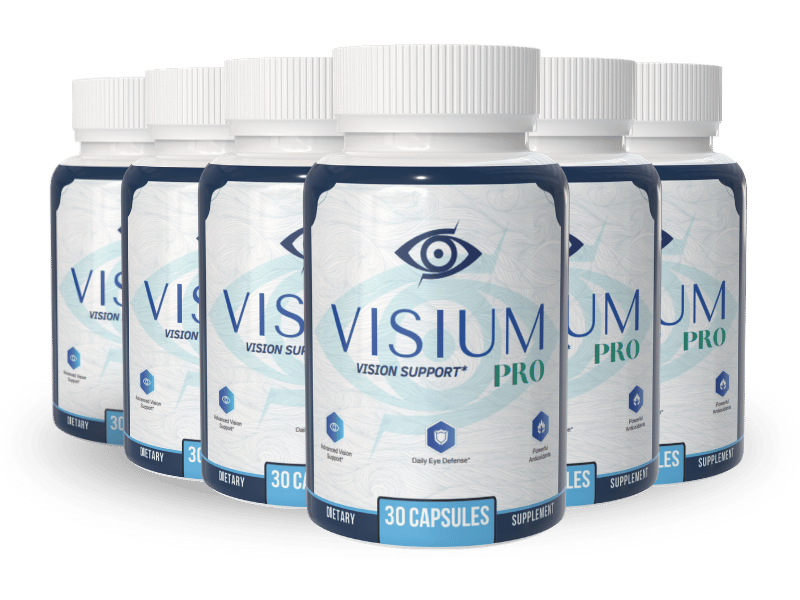

What Is Visium Pro And How Does It Work?
Look up from your phone at something across the room. Count how long it takes to sharpen.
Ten years ago that took no measurable time at all. Now there is a pause — half a second, maybe a full one, where the far wall sits soft before it resolves. Nobody notices it happening to them. What people notice is the consequence: reading in dimmer light stopped being comfortable, night driving got tiring in a way it never was, and by nine in the evening your eyes are simply done.
That is the focus lag, and it is usually the first honest signal that your eyes are working harder than they used to for the same result.
Here is the part that explains it. The retina consumes more energy per gram than almost any tissue in the human body — more than the brain, more than the heart. It runs continuously, in bright light and dim, converting photons into signal. That is a metabolically brutal job, and it depends entirely on a steady supply of specific nutrients to keep up. When that supply thins, the retina does not stop working. It works slower, and it fatigues sooner. The lag is what running behind feels like from the inside.
Visium Pro works on that supply. It is a once-daily capsule combining vitamins and minerals selected to support visual efficiency and ocular energy production — retinal function, clarity, and resilience.
The manufacturer is direct about the framing, and it is worth repeating because it is unusual: this is described as ongoing support, not an instant solution. It is not a corrective. It does not replace glasses and does not claim to. It supports the tissue doing the work, gradually, for as long as you keep supplying it.
Visium Pro Ingredients
Six ingredients. No proprietary blend, no exotic-sounding botanical doing marketing work — this is the established nutritional base for eye health, and each one has a specific address.
- Vitamin A: The most directly essential nutrient in vision. Your retina uses it to manufacture rhodopsin, the pigment that makes low-light sight possible — which is precisely why night vision and dim-light reading are usually the first things to slip. It also supports corneal protection, the outermost surface.
- Vitamin C: The eye holds one of the highest concentrations of vitamin C of any tissue in the body, and it does not do that by accident. Antioxidant protection for tissue that is exposed to light every waking hour.
- Vitamin E: Works alongside vitamin C against oxidative stress — the slow background damage that accumulates over decades in tissue that never gets a break.
- Zinc: Concentrated in the retina specifically, where it is required for maintenance and for transporting vitamin A from the liver to the eye. Without adequate zinc, the vitamin A above cannot reach where it is needed — the two are a pair, not two separate items.
- Selenium: Protects against oxidative damage and supports the enzymes that regenerate the other antioxidants after they have been used.
- Chromium: Supports balanced blood sugar levels. That may look out of place on an eye formula, and it is the most thoughtful inclusion on the list — the retina depends on the smallest blood vessels in the body, and steady glucose is part of keeping those vessels functioning properly.
The formula is deliberately unglamorous, and that is a point in its favor. These are the nutrients with the longest track record in eye health, chosen because they are established rather than novel.
Visium Pro Side Effects
There is nothing in this capsule that is unfamiliar to your body.
Three vitamins and three minerals — the same nutrients present in an ordinary diet, supplied at supportive amounts. There are no botanical extracts, no stimulants, and no active compounds acting on eye tissue. This is nutritional support, which places it among the gentlest categories of supplement there is.
That is reflected in the sources. There are no widespread reports of serious side effects associated with Visium Pro taken as directed.
Manufacturing supports it. Visium Pro is produced in a GMP-certified facility under documented quality control. With a vitamin and mineral formula, the entire question is whether the stated amounts are actually in the capsule, consistently — which is exactly what certification exists to verify.
As with any dietary supplement, if you have an existing medical condition or take prescription medication, check with your healthcare professional before starting.
Visium Pro Dosage
One capsule a day, in the morning, with water.
That is the whole routine. Each bottle holds 30 capsules — a 30-day supply, so the count tells you at a glance whether you have been consistent.
Morning suits it for a practical reason: taking it with breakfast helps with the fat-soluble vitamins in the formula, which absorb better alongside food than on an empty stomach.
Consistency is what this rewards, more than dose size. Nutritional support for the retina works by maintaining steady availability — the tissue draws on what is there, continuously, all day. It is a supply line, not an event. Missing days creates gaps in supply rather than a slightly weaker version of the same benefit.
That is also why the manufacturer describes this as ongoing support rather than a course of treatment. Eyes do not finish needing nutrients. The multi-bottle options on the official site cover a longer stretch without a monthly reorder and work out cheaper per bottle.
Do not exceed one capsule daily. This is particularly worth respecting with a vitamin and mineral formula, where more is not better and the amounts have been set deliberately.
Visium Pro – Refund Policy
A 60-day, 100% money-back guarantee covers every order, running from the date of purchase.
Sixty days is a reasonable window for a nutritional formula whose effects are gradual by design. It gives you two full months to judge — enough time for a supply-line product to show what it does, rather than a deadline that expires before the product has had a chance.
Terms and conditions vary by product and are set out in full on the official website — worth a look before you order.
Visium Pro Customer Reviews
 Dorothy Sullivan
Columbus, OH
Verified Purchase – 6 Bottles
Dorothy Sullivan
Columbus, OH
Verified Purchase – 6 Bottles
"I read every night before bed and I'd started needing the lamp closer, then a brighter bulb, then reading for twenty minutes instead of an hour because my eyes just gave out. At 67 you assume that's the road you're on. Somewhere around the second month I noticed I'd read a whole chapter and hadn't thought about my eyes once. That's how I knew — not by them feeling better, by not noticing them."
 Arthur Bennett
Orlando, FL
Verified Purchase – 6 Bottles
Arthur Bennett
Orlando, FL
Verified Purchase – 6 Bottles
"Night driving was what got me. Oncoming headlights would bloom into a white smear and I'd be gripping the wheel the whole way home. I'd started declining anything after dark, which in Florida in winter means declining most things. It's not perfect now. But the glare settles faster and I drove to my son's place last month at eight at night without thinking twice about it."
 Margaret Higgins
Denver, CO
Verified Purchase – 6 Bottles
Margaret Higgins
Denver, CO
Verified Purchase – 6 Bottles
"Mine was dryness and that gritty feeling by mid-afternoon — I was on the computer for work and by three I'd be blinking constantly and reaching for drops. I'd gone through a lot of drops. Around week six I realized the bottle on my desk hadn't moved in days. Small thing. But it's been four months and it's held."
Visium Pro – Where To Buy
A practical note on where to buy, because it affects both potency and protection.
Visium Pro is not sold through Amazon, eBay, or Walmart. Similar-looking bottles do turn up on those platforms. With a vitamin and mineral formula, potency declines over time — and marketplace listings rarely tell you how long a bottle has been sitting or under what conditions. Expired or degraded product looks exactly like fresh product.
There is a second cost that surfaces later. The 60-day guarantee applies to official orders only. So does support. A marketplace purchase does not appear in the manufacturer's system, so there is no order to return against and no refund to approve.
Buying direct keeps the potency and the protection together: fresh product at stated amounts, with support and a refund you can actually claim.
Before completing a purchase, confirm you are on the official Visium Pro website.
To ensure you're getting the authentic product, most users choose to visit the official website directly.
Is Visium Pro A Scam?
No — and what makes that easy to say is how little it claims.
This category attracts genuinely predatory marketing. Products promising you will throw away your glasses, restore 20/20, or reverse conditions that no supplement can touch. Visium Pro does none of it. It describes itself as ongoing support, not an instant solution — a phrase that undersells the product on purpose, and one that a company chasing conversions would never leave on the page.
The formula matches that restraint. Six established nutrients, named individually with no proprietary blend hiding the amounts, chosen because they have the longest record in eye health rather than because they sound impressive. Manufacturing in a GMP-certified facility. A single purchase with no recurring billing. A 60-day guarantee, with its return condition stated rather than buried.
Where the limits matter more than usual. Vision changes can signal conditions that need a doctor, not a supplement. Sudden shifts, floaters, dark spots, or loss anywhere in your field of view are reasons to see an eye doctor promptly. A nutritional formula supports healthy tissue; it does not treat disease, and Visium Pro does not claim to. If you are overdue for a proper exam, start there.
But if what you are dealing with is the focus lag — the pause before things sharpen, the lamp moved closer, the evening when your eyes are simply finished — then the maths is simple. One capsule a day inside sixty guaranteed days. If nothing changes, it goes back and the only cost was the waiting and the postage.
As with any dietary supplement, check with a healthcare professional before starting if you have an existing condition or take prescription medication.
For those who want to verify product details or check current availability, the official Visium Pro website remains the safest and most reliable option.
